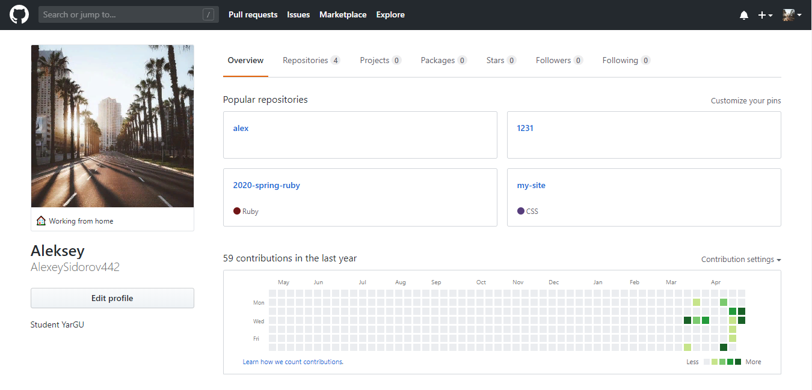

Лабараторная работа №1
-
Как это было?
Первое что я увидел когда открыл ссылку на задание это конечно же тема и соотвественно само задание
Тема работы: Создание собственных классов
Цель работы: Закрепление знаний об описании классов и их атрибутов.
На момент выполнения работы, я знал уже некоторые конструкции языка Ruby и как их использовать, то есть оставалось лишь применить имеющиеся знание на практике.
-
С чего начать?
После ознакомления с требованиями и целью работы, можно начинать приступать кодить
Нашему потоку очень повезло с преподователем по дисциплине Скриптовые языки программирования, потому что Андрей Валерьевич, так звали нашего преподователя, предложил вариант к подходу решения задачи по пунктам, из-за этого вопросы рода:А что делать дальше?
илиА как сделать это/то?
, отсутствовали. -
Описание процесса
Выполняя шаг за шагом действия по указаной инструкции к работе, начинает появляться все больше и больше интерес к языку Ruby, ну и конечно же как и в любом другом языке программирование и не только, мы очень рады тому, что у нас получилось выполнить запланированную работу.
Так я закончил писать код для файловmain.rbиcomplex.rb, конечно же по ходу работы возникало пару вопросов, но все они решаются если не боятся и пробовать писать ваш код -
Подводим итоги
Работа выполнена, загружена на GitHub, а значит можно заканчивать.

В целом я остался доволен своей работой, конечно пришлось пошевелить мозгами, но результат того стоит.